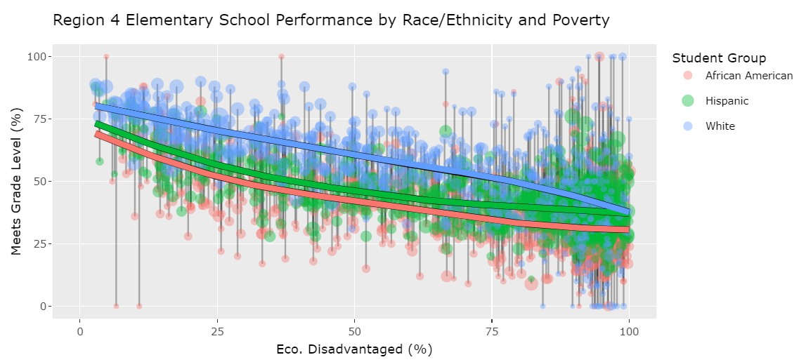
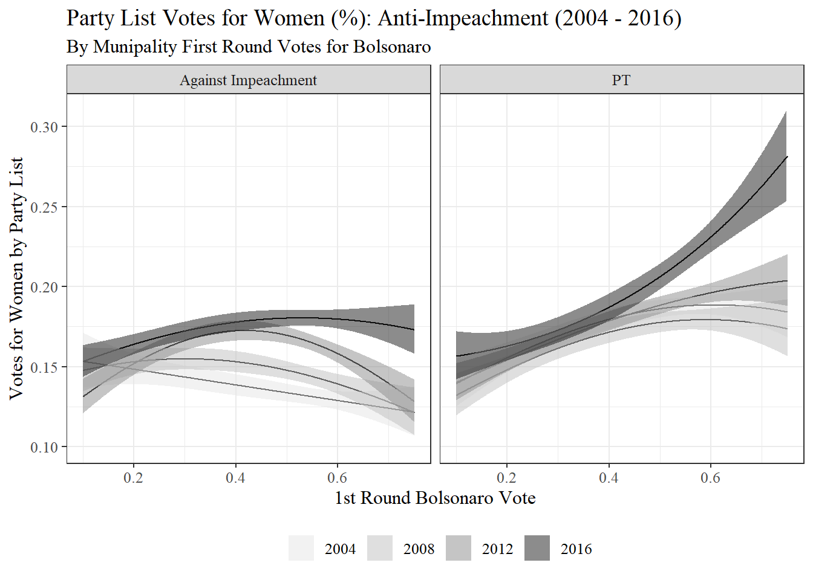

Welcome! I created this simple website to provide a few examples of
my skills that are relevant for my current job search. I’m applying to
researcher/analyst positions based in Austin, TX (or remote). If you
have arrived at this site, you likely already have access to my
resume (note: this version excludes my phone number).
I included these examples to demonstrate that my skill set
generalizes beyond political science topics. To learn more, feel free to
reach out to me by email or invite me for an interview.
Previews of my Three Code Examples
These three analyses are a mix of pet projects and more developed
analyses. They demonstrate that I am comfortable working creatively and
competently with data emanating from a wide range of topics and sources,
as well as designing creative solutions to answering research questions.
The first example focuses most on wrangling and visualizing complex data
related to race/ethnicity, poverty, and education outcomes in Texas
public schools. The second is most focused on research design and
testing hypotheses related to gender equity in Brazilian elections. The
third example is most focused on wrangling and joining large, complex
data sets, making transformations, and creating niche visualizations of
COVID-19 data and Google Community Mobility data.



LS0tDQp0aXRsZTogIkFib3V0Ig0KLS0tDQoNCldlbGNvbWUhIEkgY3JlYXRlZCB0aGlzIHNpbXBsZSB3ZWJzaXRlIHRvIHByb3ZpZGUgYSBmZXcgZXhhbXBsZXMgb2YgbXkgc2tpbGxzIHRoYXQgYXJlIHJlbGV2YW50IGZvciBteSBjdXJyZW50IGpvYiBzZWFyY2guIEknbSBhcHBseWluZyB0byByZXNlYXJjaGVyL2FuYWx5c3QgcG9zaXRpb25zIGJhc2VkIGluIEF1c3RpbiwgVFggKG9yIHJlbW90ZSkuIElmIHlvdSBoYXZlIGFycml2ZWQgYXQgdGhpcyBzaXRlLCB5b3UgbGlrZWx5IGFscmVhZHkgaGF2ZSBhY2Nlc3MgdG8gW215IHJlc3VtZV0oaHR0cHM6Ly9naXRodWIuY29tL0RhdmlkUk1jQ295L0RhdmlkUk1jQ295LmlvL3Jhdy9tYWluL2RvY3MvTWNDb3lfUmVzdW1lX0p1bmVfMjAyMi5wZGYpIChub3RlOiB0aGlzIHZlcnNpb24gZXhjbHVkZXMgbXkgcGhvbmUgbnVtYmVyKS4gDQoNCkkgaW5jbHVkZWQgdGhlc2UgZXhhbXBsZXMgdG8gZGVtb25zdHJhdGUgdGhhdCBteSBza2lsbCBzZXQgZ2VuZXJhbGl6ZXMgYmV5b25kIHBvbGl0aWNhbCBzY2llbmNlIHRvcGljcy4gVG8gbGVhcm4gbW9yZSwgZmVlbCBmcmVlIHRvIHJlYWNoIG91dCB0byBtZSBieSBlbWFpbCBvciBpbnZpdGUgbWUgZm9yIGFuIGludGVydmlldy4gDQoNCiMjIFByZXZpZXdzIG9mIG15IFRocmVlIENvZGUgRXhhbXBsZXMNCg0KVGhlc2UgdGhyZWUgYW5hbHlzZXMgYXJlIGEgbWl4IG9mIHBldCBwcm9qZWN0cyBhbmQgbW9yZSBkZXZlbG9wZWQgYW5hbHlzZXMuIFRoZXkgZGVtb25zdHJhdGUgdGhhdCBJIGFtIGNvbWZvcnRhYmxlIHdvcmtpbmcgY3JlYXRpdmVseSBhbmQgY29tcGV0ZW50bHkgd2l0aCBkYXRhIGVtYW5hdGluZyBmcm9tIGEgd2lkZSByYW5nZSBvZiB0b3BpY3MgYW5kIHNvdXJjZXMsIGFzIHdlbGwgYXMgZGVzaWduaW5nIGNyZWF0aXZlIHNvbHV0aW9ucyB0byBhbnN3ZXJpbmcgcmVzZWFyY2ggcXVlc3Rpb25zLiBUaGUgZmlyc3QgZXhhbXBsZSBmb2N1c2VzIG1vc3Qgb24gd3JhbmdsaW5nIGFuZCB2aXN1YWxpemluZyBjb21wbGV4IGRhdGEgcmVsYXRlZCB0byByYWNlL2V0aG5pY2l0eSwgcG92ZXJ0eSwgYW5kIGVkdWNhdGlvbiBvdXRjb21lcyBpbiBUZXhhcyBwdWJsaWMgc2Nob29scy4gVGhlIHNlY29uZCBpcyBtb3N0IGZvY3VzZWQgb24gcmVzZWFyY2ggZGVzaWduIGFuZCB0ZXN0aW5nIGh5cG90aGVzZXMgcmVsYXRlZCB0byBnZW5kZXIgZXF1aXR5IGluIEJyYXppbGlhbiBlbGVjdGlvbnMuIFRoZSB0aGlyZCBleGFtcGxlIGlzIG1vc3QgZm9jdXNlZCBvbiB3cmFuZ2xpbmcgYW5kIGpvaW5pbmcgbGFyZ2UsIGNvbXBsZXggZGF0YSBzZXRzLCBtYWtpbmcgdHJhbnNmb3JtYXRpb25zLCBhbmQgY3JlYXRpbmcgbmljaGUgdmlzdWFsaXphdGlvbnMgb2YgQ09WSUQtMTkgZGF0YSBhbmQgR29vZ2xlIENvbW11bml0eSBNb2JpbGl0eSBkYXRhLiAgDQpgYGB7ciwgcmVzdWx0cyA9ICJhc2lzIiwgd2FybmluZyA9IEZBTFNFLCBtZXNzYWdlID0gRkFMU0UsIGVjaG8gPSBGQUxTRX0NCmltYWdlX2xpbmsgPC0gZnVuY3Rpb24oaW1hZ2UsdXJsLC4uLil7DQogIGh0bWx0b29sczo6YSgNCiAgICBocmVmPXVybCwNCiAgICBodG1sdG9vbHM6OmltZyhzcmM9aW1hZ2UsLi4uKQ0KICAgICkNCn0NCg0KaW1hZ2VfbGluaygiZWQucG5nIiwgImh0dHBzOi8vZGF2aWRybWNjb3kuZ2l0aHViLmlvL0RhdmlkUk1jQ295LmlvL1RYX2VkLmh0bWwiLCB3aWR0aD0iMzAwcHgiKQ0KaW1hZ2VfbGluaygiZ2VuLnBuZyIsICJodHRwczovL2Rhdmlkcm1jY295LmdpdGh1Yi5pby9EYXZpZFJNY0NveS5pby9nZW5kZXJfcmVwLmh0bWwiLCB3aWR0aD0iMjAwcHgiKQ0KaW1hZ2VfbGluaygid2F2ZXNfMV8yX21vYl9kZWF0aC5naWYiLCAiaHR0cHM6Ly9kYXZpZHJtY2NveS5naXRodWIuaW8vRGF2aWRSTWNDb3kuaW8vY292aWRfdmlzLmh0bWwiLCB3aWR0aD0iMjAwcHgiKQ0KDQpgYGANCg0K